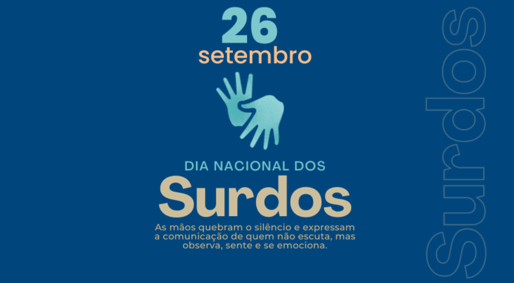
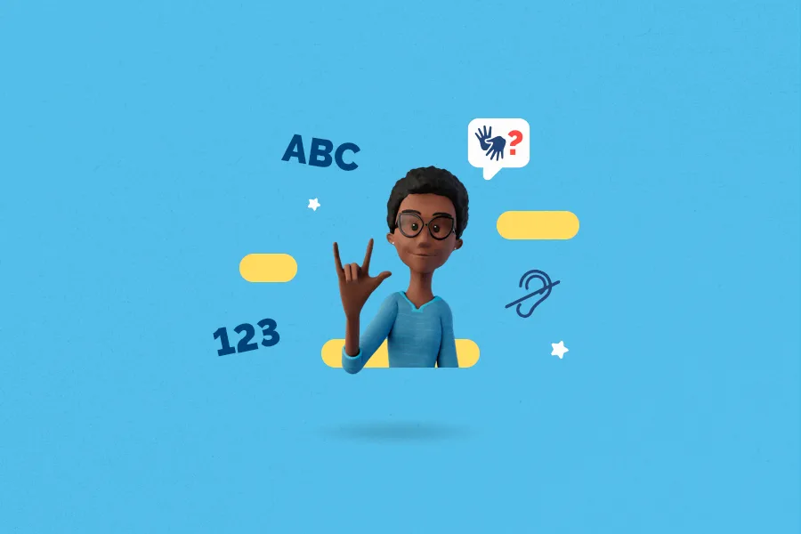

O Dia Nacional dos Surdos é celebrado no Brasil em 26 de setembro. A data valoriza a comunidade surda, sua cultura, sua língua e a luta por acessibilidade, participação e inclusão.
A data foi instituída pela Lei n° 11.796/2008.
O Dia Nacional dos Surdos é celebrado no Brasil em 26 de setembro. A data foi instituída pela Lei nº 11.796/2008 e busca promover a reflexão sobre os direitos e as conquistas da comunidade surda. Também é uma oportunidade para discutir a importância da acessibilidade, do respeito às diferenças e da participação das pessoas surdas nos diferentes espaços da sociedade.
A Língua Brasileira de Sinais, conhecida como Libras, possui grande importância para a comunicação e para a expressão de muitas pessoas surdas no Brasil. A Libras foi reconhecida legalmente como meio de comunicação e expressão pela Lei nº 10.436/2002. Assim como outras línguas, ela possui estrutura gramatical própria e permite a transmissão de ideias, sentimentos, conhecimentos e experiências por meio de uma comunicação visual e gestual.
Promover a inclusão das pessoas surdas envolve mais do que oferecer recursos de acessibilidade. É importante criar ambientes em que todos possam participar, aprender, trabalhar, comunicar-se e exercer seus direitos com autonomia. Conhecer e valorizar a Libras, respeitar a cultura surda e buscar formas mais acessíveis de comunicação são atitudes que contribuem para a construção de uma sociedade mais inclusiva e respeitosa.
Para saber mais, visite também o site oficial do Instituto Nacional de Educação de Surdos - INES